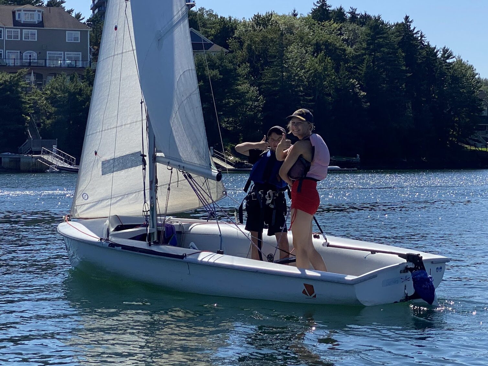

Learn to Sail
AYC Sailing School — promoting sailing excellence since 1937. Anyone can register; AYC members save 15%.

Junior (ages 5–18)
CANSail curriculum with certified instructors: WetFeet, Pram, Optimist, Double-Hand, Adventure, 420 & ILCA Racing. Fall Saturday programs too.
Adult & Family Keelboating
Learn the basics and get on the water in a fun, accessible format.
Broader Reach
Dedicated junior and adult programs to bring more people into sailing. broaderreach.ca
Fees, schedules and cancellation policy needs human review — full details at aycsailing.ca. Questions: LTS@armdaleyachtclub.ns.ca
Registration currently via Checklick (armdaleyachtclub.checklick.com); member discount requires a code from the office. Future: programs + registration + automatic member pricing from the club-management API.